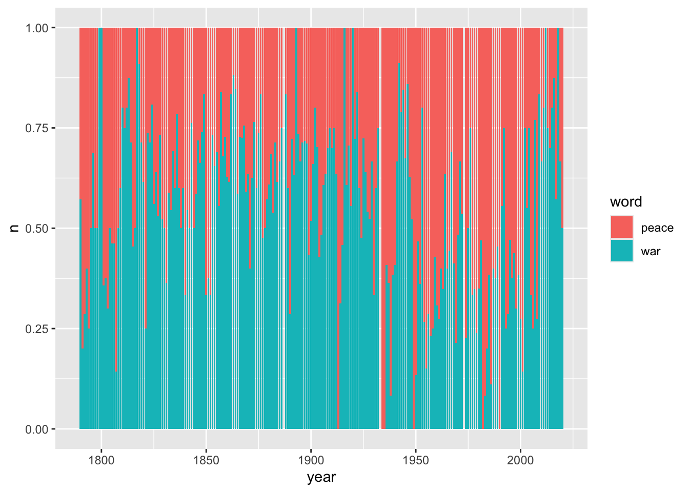

library(tidyverse)
library(tidytext)
library(readtext)
library(widyr)
library(SnowballC)Worksheet 6: Text Analysis
This is the sixth in a series of worksheets for History 8510 at Clemson University. The goal of these worksheets is simple: practice, practice, practice. The worksheet introduces concepts and techniques and includes prompts for you to practice in this interactive document. When you are finished, you should change the author name (above), knit your document, and upload it to canvas. Don’t forget to commit your changes as you go and push to github when you finish the worksheet.
Text analysis is an umbrella for a number of different methodologies. Generally speaking, it involves taking a set (or corpus) of textual sources, turning them into data that a computer can understand, and then running calculations and algorithms using that data. Typically, at its most basic level, that involves the counting of words.
Text analysis can be broken down into 4 general steps:
- Acquiring a corpus
- Preparing the text or Pre-processing
- Choosing an analytical tool * (There are many different tools or methods for text analysis. Take a minute and Google each of these methodologies: tf-idf, topic modeling, sentiment analysis, word vector analysis, n-grams)
- Analyzing the results
In this worksheet we are focusing on basic text analysis. We’ll learn how to load textual data into R, how to prepare it, and then how to analyze it using tf-idf or term-frequency according to inverse document frequency.
Before doing too much, lets load a few relevant libraries. The last few you will likely need to install.
Acquiring a Corpus
First, lets install the State of the Union package. This package contains text of all the state of the Union addresses from Washington to Trump. Run install.packages to install the sotu package.
library(sotu)This package includes both the metadata about these speeches in sotu_meta and the texts themselves in sotu_texts. Lets first look at the metadata associated with this package.
meta <- as.data.frame(sotu_meta)
head(meta) X president year years_active party sotu_type
1 1 George Washington 1790 1789-1793 Nonpartisan speech
2 2 George Washington 1790 1789-1793 Nonpartisan speech
3 3 George Washington 1791 1789-1793 Nonpartisan speech
4 4 George Washington 1792 1789-1793 Nonpartisan speech
5 5 George Washington 1793 1793-1797 Nonpartisan speech
6 6 George Washington 1794 1793-1797 Nonpartisan speechThis package also includes a function that will let us write all of the files to disk. This is crucial but also an unusual step because when conducting text analysis in the real world, you will not have an R package filled with the data. Rather you will have to organize the metadata and load the files yourself. Writing these to the disk allows us to practice that step.
file_paths <- sotu_dir(dir = "sotu_files")
head(file_paths)[1] "sotu_files/george-washington-1790a.txt"
[2] "sotu_files/george-washington-1790b.txt"
[3] "sotu_files/george-washington-1791.txt"
[4] "sotu_files/george-washington-1792.txt"
[5] "sotu_files/george-washington-1793.txt"
[6] "sotu_files/george-washington-1794.txt" What this does is create a new directory (sotu_files) and adds each State of the Union address as a text file. Notice each speech is its own .txt file that is comprised of just the text of the speech.
- Take a look at the directory in your files pane and open one of the documents.
Now lets load all these texts into R using the readtext() function. First look up the documentation for this function and read about it.
sotu_texts <- readtext(file_paths)Take a look at sotu_texts now. Notice that we have two columns, one filled with the text, and one with a document id.
head(sotu_texts, n = 5)readtext object consisting of 5 documents and 0 docvars.
# A data frame: 5 × 2
doc_id text
* <chr> <chr>
1 abraham-lincoln-1861.txt "\"\n\n Fellow-\"..."
2 abraham-lincoln-1862.txt "\"\n\n Fellow-\"..."
3 abraham-lincoln-1863.txt "\"\n\n Fellow-\"..."
4 abraham-lincoln-1864.txt "\"\n\n Fellow-\"..."
5 andrew-jackson-1829.txt "\"\n\n Fellow \"..."Now our textual data is loaded into R but the textual data and the metadata are in two different data frames. Lets combine them. Note that this isn’t the way I would typically recommend doing this but its a quirk of the SOTU data. Typically when I create a metadata spreadsheet for a textual dataset I have a column for the file name which makes joining the textual data and metadata together easier. Here, we’ll need to sort the dataset so that is alphabetical and then join the two together.
sotu_whole <-
sotu_meta %>%
arrange(president) %>% # sort metadata
bind_cols(sotu_texts) %>% # combine with texts
as_tibble() # convert to tibble for better screen viewing
glimpse(sotu_whole)Rows: 240
Columns: 8
$ X <int> 73, 74, 75, 76, 41, 42, 43, 44, 45, 46, 47, 48, 77, 78, 7…
$ president <chr> "Abraham Lincoln", "Abraham Lincoln", "Abraham Lincoln", …
$ year <int> 1861, 1862, 1863, 1864, 1829, 1830, 1831, 1832, 1833, 183…
$ years_active <chr> "1861-1865", "1861-1865", "1861-1865", "1861-1865", "1829…
$ party <chr> "Republican", "Republican", "Republican", "Republican", "…
$ sotu_type <chr> "written", "written", "written", "written", "written", "w…
$ doc_id <chr> "abraham-lincoln-1861.txt", "abraham-lincoln-1862.txt", "…
$ text <chr> "\n\n Fellow-Citizens of the Senate and House of Represen…Now our data is loaded into R and its ready to be pre-processed.
Pre-Processing
Tokenizing
One of the most basic pre-processing techniques for textual data is to tokenize it. Tokenization is essentially splitting a phrase, sentence, paragraph, or an entire text document into smaller units, such as individual words or terms. Each of these smaller units are called tokens. The tokens could be words, numbers or punctuation marks but, for historians, its common to remove the numbers and punctuation too. To do this we’ll create a data frame where each row contains a single word with its metadata as unit of observation.
tidytext provides a function called unnest_tokens(). We can use this to convert our sotu_whole data frame into one that is tokenized. It takes three arguments:
* a tibble or data frame which contains the text
* the name of the newly created column that will contain the tokens
* the name of the column within the data frame which contains the text to be tokenizedtidy_sotu <- sotu_whole %>%
unnest_tokens(word, text)
tidy_sotu# A tibble: 1,988,203 × 8
X president year years_active party sotu_type doc_id word
<int> <chr> <int> <chr> <chr> <chr> <chr> <chr>
1 73 Abraham Lincoln 1861 1861-1865 Republican written abraham-… fell…
2 73 Abraham Lincoln 1861 1861-1865 Republican written abraham-… citi…
3 73 Abraham Lincoln 1861 1861-1865 Republican written abraham-… of
4 73 Abraham Lincoln 1861 1861-1865 Republican written abraham-… the
5 73 Abraham Lincoln 1861 1861-1865 Republican written abraham-… sena…
6 73 Abraham Lincoln 1861 1861-1865 Republican written abraham-… and
7 73 Abraham Lincoln 1861 1861-1865 Republican written abraham-… house
8 73 Abraham Lincoln 1861 1861-1865 Republican written abraham-… of
9 73 Abraham Lincoln 1861 1861-1865 Republican written abraham-… repr…
10 73 Abraham Lincoln 1861 1861-1865 Republican written abraham-… in
# ℹ 1,988,193 more rowsunnest_tokens() also did something else that is really important: it made everything lowercase and took out all punctuation. The function contains options if we wanted to keep those elements, but for our purposes we don’t.
The function unnest_tokens() also has an option called token. Tokenizing by word is the default but you could also tokenize by characters, ngrams, lines, or sentences.
(@)Use the documentation to tokenize the dataset into sentences:
tidy_sotu_sentences <- sotu_whole %>%
unnest_tokens(sentence, text, token = "sentences")
head(tidy_sotu_sentences)# A tibble: 6 × 8
X president year years_active party sotu_type doc_id sentence
<int> <chr> <int> <chr> <chr> <chr> <chr> <chr>
1 73 Abraham Lincoln 1861 1861-1865 Republican written abraha… fellow-…
2 73 Abraham Lincoln 1861 1861-1865 Republican written abraha… you wil…
3 73 Abraham Lincoln 1861 1861-1865 Republican written abraha… a dislo…
4 73 Abraham Lincoln 1861 1861-1865 Republican written abraha… a natio…
5 73 Abraham Lincoln 1861 1861-1865 Republican written abraha… nations…
6 73 Abraham Lincoln 1861 1861-1865 Republican written abraha… the dis…We’ve talked about n-grams loosely in class. But lets define it more formally. An n-gram is a contiguous sequence of n items from a given sample of text or speech. The n stands for the number of items. So for example, a bi-gram is sets of two words.
For example, if I had the string: “Nothing to fear but fear itself” A bi-gram would look like this: Nothing to, to fear, fear but, but fear, fear itself.
A tri-gram would look like this: Nothing to fear, to fear but, but fear itself
We can use unnest_tokens() to create n-grams for us. To do that we just have to add an extra option that defines n.
sotu_bigrams <- sotu_whole %>%
unnest_tokens(bigram, text, token = "ngrams", n = 2)
head(sotu_bigrams$bigram)[1] "fellow citizens" "citizens of" "of the" "the senate"
[5] "senate and" "and house" - Use
unest_tokens()to create tri-grams.
sotu_trigrams <- sotu_whole %>%
unnest_tokens(trigram, text, token = "ngrams", n = 3)
head(sotu_trigrams$trigram)[1] "fellow citizens of" "citizens of the" "of the senate"
[4] "the senate and" "senate and house" "and house of" Stopwords
Another crucial component of text analysis is removing stopwords. Stopwords are words like “I, he, she, of, the” that are common and don’t convey meaning. Because they are highly common they don’t tell us anything about the content of the text itself.
There are stopwords that come with the tidytext package.
stop_words# A tibble: 1,149 × 2
word lexicon
<chr> <chr>
1 a SMART
2 a's SMART
3 able SMART
4 about SMART
5 above SMART
6 according SMART
7 accordingly SMART
8 across SMART
9 actually SMART
10 after SMART
# ℹ 1,139 more rowsThis is just one example of stopwords. You can find other lists such as stopwords in other languages or stopwords designed specifically for the 19th century. Its also possible you may want to edit the list of stopwords to include some of your own. For example, if we wanted to add the word, “America” to the stopwords list we could use add_row to do so:
stop_words_custom <- stop_words %>% add_row(word="America", lexicon="NA")For now lets just remove the default stopwords. The easiest way to do that here is to do an anti-join. We join and return all rows from our table of tokens tidy_sotu where there are no matching values in our list of stopwords.
tidy_sotu_words <- tidy_sotu %>%
anti_join(stop_words)Joining with `by = join_by(word)`tidy_sotu_words# A tibble: 787,851 × 8
X president year years_active party sotu_type doc_id word
<int> <chr> <int> <chr> <chr> <chr> <chr> <chr>
1 73 Abraham Lincoln 1861 1861-1865 Republican written abraham-… fell…
2 73 Abraham Lincoln 1861 1861-1865 Republican written abraham-… citi…
3 73 Abraham Lincoln 1861 1861-1865 Republican written abraham-… sena…
4 73 Abraham Lincoln 1861 1861-1865 Republican written abraham-… house
5 73 Abraham Lincoln 1861 1861-1865 Republican written abraham-… repr…
6 73 Abraham Lincoln 1861 1861-1865 Republican written abraham-… midst
7 73 Abraham Lincoln 1861 1861-1865 Republican written abraham-… unpr…
8 73 Abraham Lincoln 1861 1861-1865 Republican written abraham-… poli…
9 73 Abraham Lincoln 1861 1861-1865 Republican written abraham-… trou…
10 73 Abraham Lincoln 1861 1861-1865 Republican written abraham-… grat…
# ℹ 787,841 more rows#another way to do this would be to filter by words NOT in the stop word list like this: filter(!word %in% stop_words$word)Stemming
The third common kind of pre-process is called word stemming. This process reduces a word to its root stem. So for example: fishing becomes fish, fished becomes fish, fishes becomes fish. You can easily see how this might be useful for capturing all forms of a word.
tidytext doesn’t have its own word stemming function. Instead we have to rely on the functions provided by hunspell or SnowballC. I prefer SnowballC. You may need to install it before running the below code.
library(SnowballC)
tidy_sotu_words %>%
mutate(word_stem = wordStem(word))# A tibble: 787,851 × 9
X president year years_active party sotu_type doc_id word word_stem
<int> <chr> <int> <chr> <chr> <chr> <chr> <chr> <chr>
1 73 Abraham Linc… 1861 1861-1865 Repu… written abrah… fell… fellow
2 73 Abraham Linc… 1861 1861-1865 Repu… written abrah… citi… citizen
3 73 Abraham Linc… 1861 1861-1865 Repu… written abrah… sena… senat
4 73 Abraham Linc… 1861 1861-1865 Repu… written abrah… house hous
5 73 Abraham Linc… 1861 1861-1865 Repu… written abrah… repr… repres
6 73 Abraham Linc… 1861 1861-1865 Repu… written abrah… midst midst
7 73 Abraham Linc… 1861 1861-1865 Repu… written abrah… unpr… unpreced
8 73 Abraham Linc… 1861 1861-1865 Repu… written abrah… poli… polit
9 73 Abraham Linc… 1861 1861-1865 Repu… written abrah… trou… troubl
10 73 Abraham Linc… 1861 1861-1865 Repu… written abrah… grat… gratitud
# ℹ 787,841 more rowsNow if you compare the word and word_stem columns you can see the effect that wordStem had. Notice that it works well in cases like
citizens = citizen
But it does some odd things to words like representatives. Whether this is useful for you will depend on the question your asking (and the OCR accuracy) but its a useful technique to be familiar with nevertheless.
Analysis
Lets reset our work space and ensure that our df is loaded with single tokenized words and filter by our stopword list. Go ahead and clear your environment using the broom button and then run the below code. This code is simply everything we’ve run up to this point.
meta <- as.data.frame(sotu_meta)
file_paths <- sotu_dir(dir = "sotu_files")
sotu_texts <- readtext(file_paths)
sotu_whole <-
sotu_meta %>%
arrange(president) %>% # sort metadata
bind_cols(sotu_texts) %>% # combine with texts
as_tibble()
tidy_sotu <- sotu_whole %>%
unnest_tokens(word, text) %>%
anti_join(stop_words)Joining with `by = join_by(word)`- Before we move forward, take a minute a describe the chunk of code you just ran. What does each section do and how does it reflect the workflow for a topic modeling project? What are the important steps that are unique to topic modeling?
The first 8 lines of the code above are included under the “acquiring your corpus” umbrella. The first line converts sotu_meta into a data frame. The second line creates the file path - remember this step is unique in this case becuase the dataset is already included in R. The third line reads in the data. The final chunk of ‘acquiring corpus’ sorts the metadata and combines it with the text. Converting it to tibble allows for better screen viewing. The second chunk is “preprocessing.” It converts the texts into single word n-grams and removes stopwords.
The most basic kind of analysis we might be interested in doing is counting words. We can do that easily using the count() function:
tidy_sotu %>%
count(word, sort = TRUE)# A tibble: 29,897 × 2
word n
<chr> <int>
1 government 7597
2 congress 5808
3 united 5156
4 people 4298
5 country 3641
6 public 3419
7 time 3188
8 american 2988
9 war 2976
10 world 2633
# ℹ 29,887 more rowsNow we know that the most used word in state of the union speeches is government. But what if we wanted to look at when presidents use the words war versus the word peace?
tidy_sotu %>%
filter(word %in% c("war", "peace")) %>%
count(year, word)# A tibble: 442 × 3
year word n
<int> <chr> <int>
1 1790 peace 3
2 1790 war 4
3 1791 peace 4
4 1791 war 1
5 1792 peace 5
6 1792 war 2
7 1793 peace 6
8 1793 war 4
9 1794 peace 3
10 1794 war 1
# ℹ 432 more rowsThis data frame is to big to understand quickly without visualizing it. We can create a bar chart to better understand it:
library(ggplot2)
tidy_sotu %>%
filter(word %in% c("war", "peace")) %>%
count(year, word) %>%
ggplot(aes(year, n, fill = word)) +
geom_col(position = "fill")
We also might want to ask about the average length of each president’s state of the union address. Who had the longest speech and who had the shortest?
tidy_sotu %>%
count(president, doc_id) %>%
group_by(president) %>%
summarize(avg_words = mean(n)) %>%
arrange(desc(avg_words))# A tibble: 42 × 2
president avg_words
<chr> <dbl>
1 William Howard Taft 9126.
2 William McKinley 7797
3 Jimmy Carter 7673.
4 Theodore Roosevelt 7356
5 James K. Polk 6920.
6 Grover Cleveland 5736.
7 James Buchanan 5409
8 Benjamin Harrison 5308.
9 Rutherford B. Hayes 4411
10 Martin Van Buren 4286.
# ℹ 32 more rows- Think back to the metadata that we loaded about these speeches. Why are more modern president’s state of the union addresses shorter?
The stop words are calibrated based on our modern vocabulary! Modern speeches are shorter becuase more words were ommitted.
- Filter the dataset to address this discrepancy and the recreate these statistics:
sotu_nostop <- sotu_whole %>%
unnest_tokens(word, text)
sotu_nostop %>%
count(president, doc_id) %>%
group_by(president) %>%
summarize(avg_words = mean(n)) %>%
arrange(desc(avg_words))# A tibble: 42 × 2
president avg_words
<chr> <dbl>
1 William Howard Taft 22689
2 Theodore Roosevelt 19741
3 William McKinley 18648.
4 James K. Polk 18052.
5 Jimmy Carter 16076.
6 James Buchanan 14136
7 Grover Cleveland 14027.
8 Benjamin Harrison 13668
9 Martin Van Buren 11365.
10 Rutherford B. Hayes 10935.
# ℹ 32 more rowsTerm Frequency
Often, the raw frequency of a term is not as useful as relative frequency. In other words, how often that word appears relative to the total number of words in a text. This ratio is called term frequency.
You can calculate the term frequency by dividing the total occurrences of a word by the total number of words. Typically you want to do this per document.
Here’s an easy way to calculate it:
tidy_sotu_rel.freq <- tidy_sotu %>%
count(doc_id, word, sort = T) %>%# count occurrence of word and sort descending
group_by(doc_id) %>%
mutate(n_tot = sum(n), # count total number of words per doc
term_freq = n/n_tot)We can assume that words with a high frequency in the text are more important or significant. Here we can find the words with the most significance for each president:
tidy_sotu %>%
count(president, word) %>% # count n for each word
group_by(president) %>%
mutate(n_tot = sum(n), # count total number of words per doc
term_freq = n/n_tot) %>%
arrange(desc(term_freq)) %>% # sort by term frequency
top_n(1) %>% # take the top for each president
print(n = Inf) # print all rowsSelecting by term_freq# A tibble: 44 × 5
# Groups: president [42]
president word n n_tot term_freq
<chr> <chr> <int> <int> <dbl>
1 John Adams united 49 2768 0.0177
2 John Tyler government 209 12596 0.0166
3 Martin Van Buren government 256 17145 0.0149
4 William J. Clinton people 336 22713 0.0148
5 Franklin D. Roosevelt war 283 19311 0.0147
6 William McKinley government 452 31188 0.0145
7 Andrew Jackson government 436 31031 0.0141
8 Donald Trump american 135 9690 0.0139
9 Andrew Johnson government 207 14968 0.0138
10 George Washington united 86 6226 0.0138
11 Calvin Coolidge government 274 20518 0.0134
12 James K. Polk mexico 360 27679 0.0130
13 James Buchanan government 279 21636 0.0129
14 Zachary Taylor congress 38 2948 0.0129
15 Ulysses S. Grant united 359 27933 0.0129
16 William Howard Taft government 461 36506 0.0126
17 Grover Cleveland government 574 45889 0.0125
18 Franklin Pierce united 200 16240 0.0123
19 George Bush world 82 6706 0.0122
20 James Monroe united 184 15157 0.0121
21 George W. Bush america 209 17265 0.0121
22 Millard Fillmore government 135 11986 0.0113
23 John Quincy Adams congress 131 11788 0.0111
24 Harry S Truman war 308 27819 0.0111
25 Gerald R. Ford federal 65 5879 0.0111
26 Herbert Hoover government 121 10947 0.0111
27 Rutherford B. Hayes congress 194 17644 0.0110
28 Chester A. Arthur government 185 16961 0.0109
29 Lyndon B. Johnson congress 115 11207 0.0103
30 James Madison war 85 8327 0.0102
31 Barack Obama america 204 20529 0.00994
32 Benjamin Harrison government 209 21230 0.00984
33 Richard M. Nixon federal 232 23701 0.00979
34 Jimmy Carter congress 518 53710 0.00964
35 John F. Kennedy world 68 7302 0.00931
36 Theodore Roosevelt government 528 58848 0.00897
37 Ronald Reagan government 133 15005 0.00886
38 Ronald Reagan people 133 15005 0.00886
39 Woodrow Wilson government 105 11982 0.00876
40 Warren G. Harding public 39 4583 0.00851
41 Dwight D. Eisenhower world 204 24410 0.00836
42 Thomas Jefferson country 58 7418 0.00782
43 Abraham Lincoln congress 81 10462 0.00774
44 Abraham Lincoln united 81 10462 0.00774- The code above is commented to help you follow it. Walk through the code above, and explain what each line does in your own words. If its a function you are unfamiliar with, look up the documentation.
The first line opens the dataset. The second line counts the words for each president. The third lumps these words together per president. The next two lines create two new columns, n_tot and term_freq - the first composed of the total amount of words per doc and the second dividing the number of occurrences of a single word by the total number of words in the doc. The next lines organize the information - from highest frequency to lowest, only spitting out the highest for each president, and then printing this info.
TF-IDF
The above measures the frequency of terms within individual documents. But what if we know about words that seem more important based on the contents of the entire corpus? That is where tf-idf or term-frequency according to inverse document frequency comes in.
Tf-idf measures how important a word is within a corpus by scaling term frequency per document according to the inverse of the term’s document frequency (number of documents within the corpus in which the term appears divided by the number of documents). The tf–idf value increases proportionally to the number of times a word appears in the document and is offset by the number of documents in the corpus that contain the word, which helps to adjust for the fact that some words appear more frequently in general.
Don’t worry too much about how tf-idf is calculated. But if you feel like you are a bit lost and want to understand the specifics - I recommend reading the tf-idf wikipedia page and this blog post from Learn Data Science.
We’ll calculate tf-idf in the next code chunk but lets talk for a second about what that number will represent. It will be:
* lower for words that appear frequently in many documents of the corpus, and lowest when the word occurs in virtually all documents.
* higher for words that appear frequently in just a few documents of the corpus, this lending high discriminatory power to those few documents.Luckily, tidytext provides a function for calculating tf-idf. To calculate tf-idf the function needs a list of every word in every document and the count. Like this:
tidy_sotu %>%
count(doc_id, word, sort = TRUE) # A tibble: 358,186 × 3
doc_id word n
<chr> <chr> <int>
1 harry-s-truman-1946.txt dollars 207
2 jimmy-carter-1980b.txt congress 204
3 harry-s-truman-1946.txt war 201
4 william-howard-taft-1910.txt government 164
5 james-k-polk-1846.txt mexico 158
6 richard-m-nixon-1974b.txt federal 141
7 harry-s-truman-1946.txt million 138
8 harry-s-truman-1946.txt fiscal 129
9 jimmy-carter-1981.txt administration 129
10 william-howard-taft-1912.txt government 129
# ℹ 358,176 more rowsWe can feed that to the function and get the tf-idf:
sotu.tf.idf <- tidy_sotu %>%
count(doc_id, word, sort = TRUE) %>%
bind_tf_idf(word, doc_id, n)
head(sotu.tf.idf)# A tibble: 6 × 6
doc_id word n tf idf tf_idf
<chr> <chr> <int> <dbl> <dbl> <dbl>
1 harry-s-truman-1946.txt dollars 207 0.0164 0.598 0.00981
2 jimmy-carter-1980b.txt congress 204 0.0126 0.00418 0.0000528
3 harry-s-truman-1946.txt war 201 0.0159 0.0339 0.000540
4 william-howard-taft-1910.txt government 164 0.0147 0.00418 0.0000613
5 james-k-polk-1846.txt mexico 158 0.0225 0.799 0.0180
6 richard-m-nixon-1974b.txt federal 141 0.0141 0.293 0.00414 The resulting data frame has 3 columns: term frequency (tf), inverse document frequency (idf) and Tf-idf (tf_idf).
Lets look at what the words with the highest tf-idf score are.
sotu.tf.idf %>% arrange(desc(tf_idf))# A tibble: 358,186 × 6
doc_id word n tf idf tf_idf
<chr> <chr> <int> <dbl> <dbl> <dbl>
1 donald-trump-2019.txt applause 104 0.0424 2.22 0.0942
2 lyndon-b-johnson-1966.txt vietnam 32 0.0152 2.35 0.0356
3 jimmy-carter-1980a.txt soviet 31 0.0218 1.49 0.0325
4 george-w-bush-2003.txt hussein 19 0.00811 3.87 0.0314
5 george-w-bush-2003.txt saddam 19 0.00811 3.69 0.0299
6 franklin-d-roosevelt-1943.txt 1942 13 0.00758 3.87 0.0294
7 dwight-d-eisenhower-1961.txt 1953 23 0.00747 3.87 0.0289
8 john-adams-1800.txt gentlemen 8 0.0153 1.77 0.0270
9 benjamin-harrison-1892.txt 1892 40 0.00741 3.53 0.0262
10 franklin-d-roosevelt-1942.txt hitler 7 0.00527 4.79 0.0252
# ℹ 358,176 more rows- Pick a president who served more than one term. Filter the dataset and generate both raw word counts and tf-idf scores for that president. What words are most significant in each method? Why and what does that tell you about that president?
sotu.tf.idf.TeddyRoosevelt <- tidy_sotu %>% filter (president == "Theodore Roosevelt") %>%
count(doc_id, word, sort = TRUE) %>%
bind_tf_idf(word, doc_id, n)
sotu.tf.idf.TeddyRoosevelt %>% arrange(desc(tf_idf))# A tibble: 22,967 × 6
doc_id word n tf idf tf_idf
<chr> <chr> <int> <dbl> <dbl> <dbl>
1 theodore-roosevelt-1903.txt colombia 28 0.00466 0.981 0.00457
2 theodore-roosevelt-1903.txt colombian 13 0.00216 2.08 0.00449
3 theodore-roosevelt-1905.txt domingo 18 0.00197 2.08 0.00410
4 theodore-roosevelt-1905.txt santo 18 0.00197 2.08 0.00410
5 theodore-roosevelt-1906.txt colored 14 0.00159 2.08 0.00332
6 theodore-roosevelt-1906.txt tax 29 0.00330 0.981 0.00324
7 theodore-roosevelt-1903.txt granada 9 0.00150 2.08 0.00311
8 theodore-roosevelt-1902.txt soundings 5 0.00140 2.08 0.00291
9 theodore-roosevelt-1903.txt revolution 24 0.00399 0.693 0.00277
10 theodore-roosevelt-1902.txt cable 14 0.00391 0.693 0.00271
# ℹ 22,957 more rows#Theodore Roosevelt was talking about Columbia not more than anything else, but significantly more than his fellow presidents. It is not surprising that "tax" and "judges" are used frequently by Roosevelt, but the lower tf-idf score is also not surprising - as these are terms we suspect to hear from the president. sotu.tf.idf.Lincoln <- tidy_sotu %>% filter (president == "Abraham Lincoln") %>%
count(doc_id, word, sort = TRUE) %>%
bind_tf_idf(word, doc_id, n)
sotu.tf.idf.Lincoln %>% arrange(desc(tf_idf))# A tibble: 5,766 × 6
doc_id word n tf idf tf_idf
<chr> <chr> <int> <dbl> <dbl> <dbl>
1 abraham-lincoln-1861.txt capital 16 0.00621 0.693 0.00430
2 abraham-lincoln-1861.txt circuit 8 0.00310 1.39 0.00430
3 abraham-lincoln-1862.txt forever 9 0.00291 1.39 0.00404
4 abraham-lincoln-1861.txt hired 7 0.00272 1.39 0.00376
5 abraham-lincoln-1861.txt judges 7 0.00272 1.39 0.00376
6 abraham-lincoln-1862.txt bonds 8 0.00259 1.39 0.00359
7 abraham-lincoln-1864.txt pensioners 6 0.00250 1.39 0.00347
8 abraham-lincoln-1863.txt consuls 5 0.00209 1.39 0.00289
9 abraham-lincoln-1863.txt international 5 0.00209 1.39 0.00289
10 abraham-lincoln-1863.txt oath 5 0.00209 1.39 0.00289
# ℹ 5,756 more rows#I tried it again with Lincoln just for fun. Co-Occurance
Co-occurrence gives us a sense of words that appear in the same text, but not necessarily next to each other. It shows words that are likely to co-occur. Note that this is different than topic modeling, which we’ll discuss next week.
For this section we will make use of the widyr package. The function which helps us do this is the pairwise_count() function. It lets us count common pairs of words co-appearing within the same speech. This function might take a second as the resulting data frame will be incredibly large.
sotu_word_pairs <- sotu_whole %>%
mutate(speech_end = word(text, -5000, end = -1)) %>% # extract last 100 words
unnest_tokens(word, speech_end) %>% # tokenize
filter(!word %in% stop_words$word) %>% # remove stopwords
pairwise_count(word, doc_id, sort = TRUE, upper = FALSE) # don't include upper triangle of matrix
head(sotu_word_pairs)# A tibble: 6 × 3
item1 item2 n
<chr> <chr> <dbl>
1 congress time 239
2 congress government 237
3 government time 237
4 congress united 236
5 time united 236
6 government united 235Now we have a list of words that appear near each other in the text as well as the frequency. Once again this dataset is far too large to look at in a data frame. Instead, we’ll create a network graph that shows us the relationships between words for any words that appear more than 200 times. I chose 200 after looking at the above dataset and seeing that the highest count was 239. You want the network graph to be manageable and not too large.
library(igraph)
Attaching package: 'igraph'The following objects are masked from 'package:lubridate':
%--%, unionThe following objects are masked from 'package:dplyr':
as_data_frame, groups, unionThe following objects are masked from 'package:purrr':
compose, simplifyThe following object is masked from 'package:tidyr':
crossingThe following object is masked from 'package:tibble':
as_data_frameThe following objects are masked from 'package:stats':
decompose, spectrumThe following object is masked from 'package:base':
unionlibrary(ggraph)
sotu_word_pairs %>%
filter(n >= 200) %>% # only word pairs that occur 200 or more times
graph_from_data_frame() %>% #convert to graph
ggraph(layout = "fr") + # place nodes according to the force-directed algorithm of Fruchterman and Reingold
geom_edge_link(aes(edge_alpha = n, edge_width = n), edge_colour = "tomato") +
geom_node_point(size = 5) +
geom_node_text(aes(label = name), repel = TRUE,
point.padding = unit(0.2, "lines")) +
theme_void()Warning: The `trans` argument of `continuous_scale()` is deprecated as of ggplot2 3.5.0.
ℹ Please use the `transform` argument instead.- Create a network graph that shows the relationship between words that appear between 125 and 175 times.
sotu_word_pairs %>%
filter(n >= 125 & n <= 175) %>% # only word pairs that occur between 125 and 175 times
graph_from_data_frame() %>% #convert to graph
ggraph(layout = "fr") + # place nodes according to the force-directed algorithm of Fruchterman and Reingold
geom_edge_link(aes(edge_alpha = n, edge_width = n), edge_colour = "cornflowerblue") +
geom_node_point(size = 5) +
geom_node_text(aes(label = name), repel = TRUE,
point.padding = unit(0.2, "lines")) +
theme_void()Warning: ggrepel: 91 unlabeled data points (too many overlaps). Consider
increasing max.overlapsAnalyzing Historical Newspapers About Buffalo Bill
To practice text analysis this week you will be helping Dr. Seefeldt with his research. In the github repository below I have included a metadata file containing all of the associated info from each article and a txt folder with each text file.
The dataset is described by Dr. Seefeldt this way: > The project staff identified 99 visits to Indiana communities, some of which included performances spanning two or more days. We located and captured a total of 720 Indiana newspaper pieces, including 273 articles promoting specific Wild West performances, 74 substantive pieces documenting locally-based reception to these performances, and 373 extraneous items, including advertisements, images, and reprints of articles generated elsewhere. In total, the team transcribed approximately 740 items (R = Reception; P = Promotion; E = Extraneous)
Use this link to read more about the project and the historical context: https://docs.google.com/document/d/1LnmyCob5zc984EkMAx3sXlXQqhNbm9O8XV4O3HrQUbQ/edit?usp=sharing
You should use the rest of this worksheet to practice text analysis (and R more broadly) by exploring this dataset. Using the metadata provided and the raw text files can you use what you learned above to analyze these texts? What historical conclusions might you be able to draw? Perform the textual analysis and then write up your findings for Dr. Seefeldt. What might he be able to draw from this analysis? I will then take your work, compile it, and share it with him. Here are 3 research questions to get started. You can use one of these or come up with your own.
- Is there a difference in promotion language vs. reception language. In other words, what was BBWW selling and what did Indiana newspapers find remarkable.
- Can we detect some change over time in promotion language and reception language (marketing and reviewing)? Were there types of characters, scenarios, action promised in promotional material and/or noted in reviews earlier vs later?
- What can be gleaned from the items tagged as extraneous as far as topics? These are news items that are somehow related to BBWW. Crime, finances, celebrity, etc.
Write up a research plan in the space below. What are you looking to explore?
I plan on tackling the first research question, “Is there a difference in promotion language vs. reception language?” This will be intersting to explore across space. I have a mind to take this a bit further. I will explore whether they market the same everywhere and if there any traceable trends among places that recieve them similarly.
Lets download the data.
#zip file of all the .txt files. One for each issue.
download.file("https://github.com/dseefeldt/IndianaNewspapers/raw/main/bb-txt.zip", "bb-txt.zip")
unzip("bb-txt.zip")
# Metadata that includes info about each article.
bb.metadata <- read.csv("https://raw.githubusercontent.com/dseefeldt/IndianaNewspapers/main/metadata.csv")- There are a few problems with this metadata from a tidy data perspective. First the date column isn’t useful for assessing change over time. Can you split it into 3 columns one for year, month, and day? This will be useful if you want to try and identify change over time. Use the Date column not the FullDate column. This column is messy and you’ll need to clean it up in order to have useful data.
#bb.metadata.1 <- separate_wider_delim(bb.metadata, Date, delim = ",", names = "Year" )
bb.meta.tidy <- tidyr::separate(bb.metadata, Date, c('month_day', 'year'), sep = ",",remove = FALSE)Warning: Expected 2 pieces. Missing pieces filled with `NA` in 317 rows [295, 296, 297,
298, 299, 300, 301, 302, 303, 304, 305, 306, 307, 308, 309, 310, 311, 312, 313,
314, ...].- Now lets load the BB data. This happens in a slightly different way than with the SOTU data since its local data and not data from an R package.
data_dir <- paste(getwd(), "/txt", sep = "")
bb <- readtext(paste0(data_dir, "/*.txt"))- Now you need to join this with the metadata for each file. Note that doc_id and Filename are the same value. How would you join two datasets together in R so that you can proceed with textual analysis?
bb_new <- bb %>%
plyr::rename(c("doc_id" = "Filename"))
bb_whole <-
bb.meta.tidy %>%
arrange(year) %>% # sort metadata
bind_cols(bb_new) %>% # combine with texts
as_tibble() # convert to tibble for better screen viewingNew names:
• `Filename` -> `Filename...3`
• `Filename` -> `Filename...16`glimpse(bb_whole)Rows: 763
Columns: 17
$ R_P_E <chr> "P", "P", "E", "E", "E", "E", "E", "E", "E", "P", "P", "…
$ Transcript <lgl> TRUE, TRUE, TRUE, TRUE, TRUE, TRUE, TRUE, TRUE, TRUE, TR…
$ Filename...3 <chr> "FtWayneEveningPost-6-26-96.txt", "SullivanDemocrat-1-17…
$ Title <chr> "Buffalo Bill", "Agents Wanted for Heroes of the Plains"…
$ Publication <chr> "Fort Wayne Evening Post", "Sullivan Democrat", "Logansp…
$ Date <chr> "June 26, 1896", "Jan. 17, 1883", "Jan. 20, 1883", "Jan…
$ month_day <chr> "June 26", "Jan. 17", "Jan. 20", "Jan. 27", "Jan. 30", "…
$ year <chr> " 1896", " 1883", " 1883", " 1883", " 1883", " 1883", "…
$ FullDate <chr> "1896-06-26", "1883-01-17", "1883-01-20", "1883-01-27", …
$ Page <chr> "N/A", "4", "8", "4", "4", "4", "2", "1", "4", "8", "5",…
$ Summary <chr> "Emphasizing show as educational; notes Buffalo Bill's a…
$ Notes <chr> "", "Contains the Wild Bill Image", "", "", "", "", "", …
$ SourceFormat <chr> "P", "A", "P", "P", "P", "P", "P", "P", "P", "P", "P", "…
$ X <chr> "", "", "", "", "", "", "", "", "", "", "", "", "", "", …
$ duplicated <lgl> FALSE, FALSE, FALSE, FALSE, FALSE, FALSE, FALSE, FALSE, …
$ Filename...16 <chr> "AlbionNobleCountyDemocrat-2-15-94.txt", "AlbionNobleCou…
$ text <chr> "Albion Noble County Democrat February 15, 1894 pg. 4\nW…- Now you can begin your textual analysis for Dr. S. Add code chunks below and intersperse text to explain what you are doing and why in the text of the worksheet.
bb_whole_tidy <- bb_whole %>%
unnest_tokens(word, text) %>% #creates a new data frame with each text file broken into tokens
anti_join(stop_words)# eliminates stop words Joining with `by = join_by(word)`bb.whole.n.count <- bb_whole_tidy %>%
count(word, sort = TRUE) #just counting words to get my bearings #I'm curious if there are more words used for promotion or reception. There is a shockingly minuscule difference.
bb_whole_tidy %>% #calling our dataset
count(R_P_E, Filename...3) %>% #counting words per file
group_by(R_P_E) %>% #grouping by Reception, Promotion, Extraneous
summarize(avg_words = mean(n)) #finding average word number per file per category# A tibble: 4 × 2
R_P_E avg_words
<chr> <dbl>
1 "" 39.5
2 "E" 116.
3 "P" 102.
4 "R" 103. #IGNORE. this is really just a test. the following tf_idf will be more relevant
bb.tf.idf <- bb_whole_tidy %>%
count(R_P_E, word, sort = TRUE) %>%
bind_tf_idf(word, R_P_E, n)
bb.tf.idf %>% arrange(desc(tf_idf))# A tibble: 19,048 × 6
R_P_E word n tf idf tf_idf
<chr> <chr> <int> <dbl> <dbl> <dbl>
1 R indians 92 0.00995 0.288 0.00286
2 R reedy 15 0.00162 1.39 0.00225
3 R pg 66 0.00714 0.288 0.00205
4 P pg 191 0.00638 0.288 0.00183
5 E pg 253 0.00577 0.288 0.00166
6 P indians 152 0.00507 0.288 0.00146
7 R indian 45 0.00487 0.288 0.00140
8 E indian 201 0.00458 0.288 0.00132
9 E life 189 0.00431 0.288 0.00124
10 R horse 38 0.00411 0.288 0.00118
# ℹ 19,038 more rows#ignore. another experiment that did not produce much fruit
bb.tf.idf %>%
filter(R_P_E == "R" | R_P_E == "P") %>%
filter(tf_idf > 0.0008) %>%
ggplot(aes(word, n, fill = R_P_E)) +
geom_col(position = "fill") + facet_wrap(~word) #trying to find the words most notably associated with promotion (looking at tf_idf in results - will be in descending order)
bb.tf.idf.promotion <- bb_whole_tidy %>% filter (R_P_E == "P") %>% #subset data to just pull promotion
count(Filename...3, word, sort = TRUE) %>%
bind_tf_idf(word, Filename...3, n)
bb.tf.idf.promotion %>% arrange(desc(tf_idf))# A tibble: 23,876 × 6
Filename...3 word n tf idf tf_idf
<chr> <chr> <int> <dbl> <dbl> <dbl>
1 ElkTruth-8-28-14p.2-second.txt advertisment 1 0.111 5.68 0.632
2 DailyWabashExpress-5-24-83.txt guy 2 0.105 5.68 0.598
3 FtWayneGazette-7-6-01.txt date 2 0.143 3.38 0.483
4 FtWayneSentinel-7-13-07.txt ariadne 2 0.0833 5.68 0.474
5 IndianapolisNews-3-2-83.txt bloomfield 2 0.0833 5.68 0.474
6 LogansportChronicle-6-9-83.txt tamed 1 0.0833 5.68 0.474
7 MarshallCountyIndependent-7-12-01.txt utica 1 0.0833 5.68 0.474
8 IndianapolisNews-9-30-85.txt graphic 1 0.125 3.74 0.467
9 IndianapolisStar-9-15-14.txt 26 1 0.125 3.74 0.467
10 FtWayneSentinel-7-12-01.txt stubbs 2 0.08 5.68 0.455
# ℹ 23,866 more rows#finding words most strongly associated with reception (looking at tf_idf in results - will be in descending order)
bb.tf.idf.reception <- bb_whole_tidy %>% filter (R_P_E == "R") %>% #subset data to just pull reception
count(Filename...3, word, sort = TRUE) %>%
bind_tf_idf(word, Filename...3, n)
bb.tf.idf.reception %>% arrange(desc(tf_idf))# A tibble: 7,343 × 6
Filename...3 word n tf idf tf_idf
<chr> <chr> <int> <dbl> <dbl> <dbl>
1 IndianapolisMonroesIronCladAge-6-16-83.txt tickets 2 0.105 4.50 0.474
2 FtWayneSentinel-7-13-01.txt delight… 1 0.0909 4.50 0.409
3 FtWayneSentinel-7-13-01.txt yorkers 1 0.0909 4.50 0.409
4 FtWayneJournalGazette-7-18-07.txt union 2 0.105 3.81 0.401
5 IndianapolisMonroesIronCladAge-6-16-83.txt collect… 2 0.105 3.81 0.401
6 CrawfJournal7-31-09p4.txt cruelty 2 0.0769 4.50 0.346
7 LogansportJournal-5-4-85.txt fly 1 0.0769 4.50 0.346
8 LogansportJournal-5-4-85.txt stimula… 1 0.0769 4.50 0.346
9 FtWayneJournalGazette-7-18-07.txt madison 2 0.105 3.11 0.328
10 ElkhartDailyReview-8-14-08.txt blown 2 0.0714 4.50 0.321
# ℹ 7,333 more rows#an experiment to see if this is an effective visualization for a single word
library(ggplot2)
bb_whole_tidy %>% filter(R_P_E == "R" | R_P_E == "P") %>% #filtering the dataset for promo and reception
filter(word == "indians") %>% #filtering for the word I want to visualize
count(year, R_P_E) %>% # getting a count for the designatged word per year per category
ggplot(aes(year, n, fill = R_P_E)) + #plotting the results
geom_col(position = "fill")#experiment. not super helpful!
bb_whole_tidy %>%
filter(R_P_E == "R" | R_P_E == "P") %>% #filtering for reception and promotion
count(year, R_P_E, word) %>% filter(n > 30) %>%
# getting a count for words per category per year
ggplot(aes(year, n, fill = R_P_E)) + #plotting the results
geom_col(position = "fill") + facet_wrap(~word) #another failed experiment
bb.promo. <- bb.tf.idf.promotion %>%
filter(tf_idf > 0.35 ) #filtering for tf_idf scores above .35 to only get a handful of high results
ggplot(bb.promo., aes(x = word, y = tf_idf)) + theme(axis.text.x=element_text(angle=90)) + geom_col(width = .7, fill="slategrey") + labs(x="word", y="tf_idf", title="tf_idf promotion") #plotting bb.reception. <- bb.tf.idf.reception %>%
filter(tf_idf > 0.25 ) #filtering for tf_idf scores above .25 to only get a handful of high results
ggplot(bb.reception., aes(x = word, y = tf_idf)) + theme(axis.text.x=element_text(angle=90)) + geom_col(width = .7, fill="cornflowerblue") + labs(x="word", y="tf_idf", title="tf_idf reception") #plotting- Finally, when you are all done. Write up your findings. What research question did you focus on and what did you learn?
I focused on the difference between promotion language and reception language. The two bar graphs immediately above this write up are the most relevant to my findings. These graphs highlight the differences between promotion and reception, as similarity has been filtered out by the tf_idf process. I am particularly struck by the inclusion of words such as “cruelty” and “dishonest” in the reception data. These words do not occur often, but they are tightly associated with reception – meaning someone was taking this away from the show and it was not the Company’s intention. It is possible this observation would have gotten lost without splicing the data in this way. I am also curious as to why “pneumonia” and “stockholder” appear in the promotion graph. Were the performers prone to getting sick by living in close proximity, leading to the cancellation or rescheduling of shows? Were people invited to become stockholders? These observations provide a possible avenue to follow.